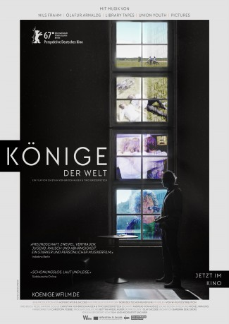

IMDB-Wertung: 7.5 / 10
IMDB-Wertung: 7.5 / 10  Metascore:
Metascore: 
 IMDB-Wertung: 7.5 / 10 Metascore:
Jahr: 2017
Dauer: 94 Minuten
FSK: 12
Land: Deutschland Studio: W-filmTonspuren:
Untertitel: Englisch,
Auflösung: SD (720x404) Größe: 761 MB
Genre: Musik, Dokumentation
Regisseur: Timo Großpietsch, Christian von Brockhausen
Drehbuch: Timo Großpietsch, Christian von Brockhausen
Soundtrack:
Darsteller:
Datei: X:\2017(G-M)\Könige der Welt (2017, FSK12, 720x404).mkv seit 05.12.2019
Festplatte: HD 2017(A-Z)-2018(A-F)
 Es gibt insgesamt 148 Filme in der Gruppe '2017(G-M)'
Es gibt insgesamt 148 Filme in der Gruppe '2017(G-M)'